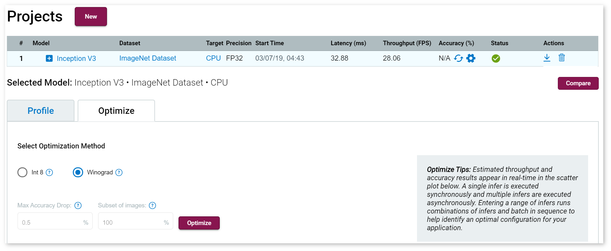
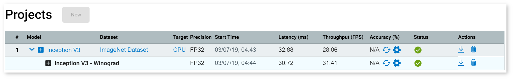

Using the Winograd algorithm for convolution execution can provide increased performance compared to common implementation. However, it can be difficult to understand which algorithm would be faster due to dependency on convolution layer parameters and hardware configuration. The Winograd Algorithmic Tuner solves this problem automatically.
For more detailed information about the algorithm, refer to this whitepaper.
Winograd Algorithmic Tuner Workflow
The Winograd Algorithmic Tuner workflow is:
- Input: Original IR
- Collecting per-layer performance numbers for the original model.
- Collecting per-layer performance numbers for the modified model, in which the Winograd algorithm was set as the priority for all convolution layers.
- Determining convolutions to be executed with the Winograd algorithm. The tuner uses heuristic approaches in this step. It takes into account the performance of each particular convolution layer and analyzes changes in the execution graph that can lead to performance overhead.
- Output: Modified IR with preassigned algorithm priority for each convolution layer
NOTE: OpenVINO™ supports the Winograd algorithm only for a limited set of convolution parameters. Some convolution layers with prioritization of the Winograd algorithm cannot be executed with this approach.
Prerequisites and Limitations
- Supports only CPU targets with Intel® Advanced Vector Extensions 512 (Intel® AVX-512) instruction set.
- Supports only convolution layers.
- Applicable only to a certain subset of convolution parameters, such as 3x3 kernel. Strides are not supported.
- Mostly applicable to highly compute-bound convolutions, because the algorithm includes large overhead on data permutations.
Configure Winograd Optimization Settings
Once a job is finished, you can configure model optimization to Winograd.

NOTE: Using Winograd optimization, you can tune an original (top-level) model, or a model that has already been tuned.
Select the Optimize section, and then check Winograd.
View Winograd Calibration
Click Optimize and a new row of your model appears.

Once the job is complete, you can click on it to view inference results.